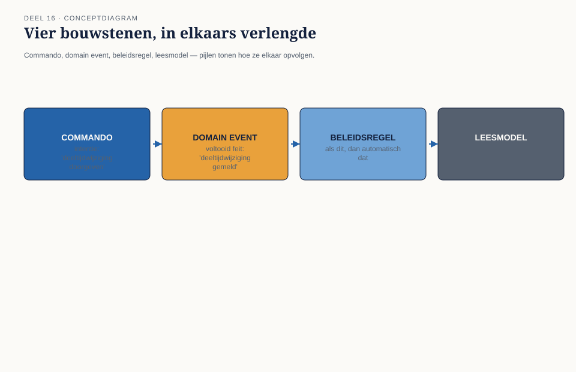
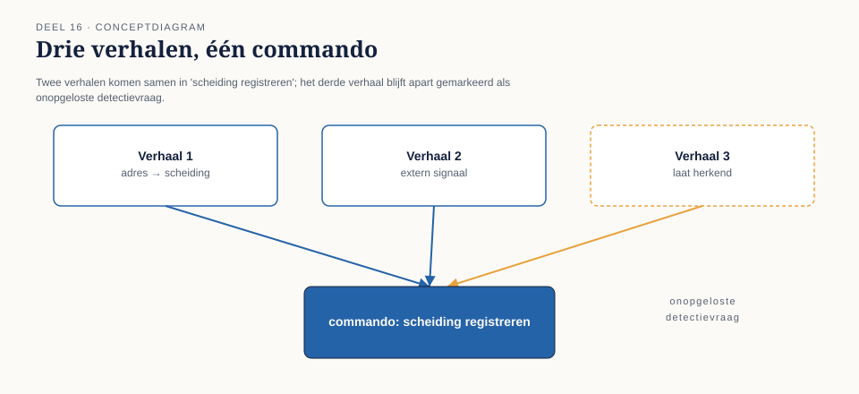
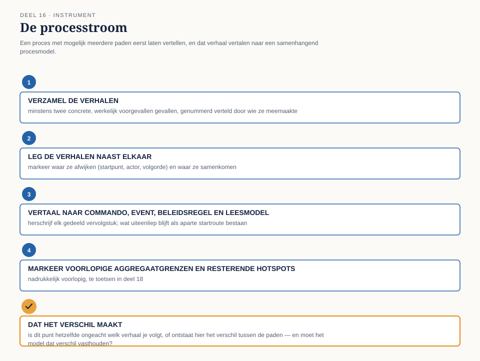

Cursus Domain-Driven Design · Niveau 2 (het landschap) · Deel 16 van 30
Van breed naar diep
Twee hotspots van vorige week, opnieuw op tafel: is een deeltijdwijziging één gebeurtenis of twee, en waarom lopen drie scheidingsverhalen alle drie anders? Dit deel voegt commando, beleidsregel en leesmodel toe aan het domain event, en introduceert domain storytelling voor processen die zich niet in één rechte lijn laten vangen.
8secties
±1uleestijd + opdrachten
4controlevragen
4bouwstenen procesmodellering
Positionering. Deze cursus bereidt voor op de iSAQB® Advanced Level-module Domain-Driven Design en is uitdrukkelijk geen vervanging van een erkende iSAQB-training — zij levert op zichzelf geen certificaat op. Alle formuleringen, figuren en werkvormen zijn van Ductus; waar wij naar begrippen van Eric Evans en Vaughn Vernon verwijzen, doen wij dat in eigen woorden en eigen voorbeelden. Studeer voor de module altijd óók bij een erkende provider.
Niveau 2: ➊ Landschap in kaart → ➋ Core/supporting/generic → ➌ Context mapping I → ➍ Context mapping II → ➎ EventStorming I → ➏ EventStorming II (hier) → ➐ Example mapping → ➑ Aggregates herzien → ➒ Architectuurpatronen → ➓ Teams/Conway → ⓫ Events als integratie → ⓬ Examentraining + portfolio
01
Waar dit deel over gaat
⏱ 6 min
Deel 15 sloot af met een muur vol tijdlijn, vier pivotal events en zes hotspots — en met Foppe's aankondiging dat twee daarvan bewust zijn doorgeschoven: de deeltijdwijziging en de scheidingsketen. Big-picture EventStorming was "breed vóór diep." Dit deel is het moment waarop het team dieper gaat — op precies deze twee plekken.
Dit deel introduceert twee instrumenten: EventStorming op proces- en ontwerpniveau, de twee resterende niveaus naast big picture, en domain storytelling, een aanvullende werkvorm toegesneden op meerpadige, door mensen verteld proces.
Aan het eind van dit deel kun je:
het verschil benoemen tussen big-picture-, procesmodellerings- en ontwerpniveau in EventStorming, en per situatie kiezen welk niveau nodig is;
een proces uitschrijven in commando's, gebeurtenissen, beleidsregels (policies) en leesmodellen (read models);
domain storytelling toepassen om een proces met meerdere paden te vertellen vanuit het perspectief van wie het uitvoert;
met de processtroom vertelde varianten omzetten in één samenhangend procesmodel, inclusief voorlopige aggregaatgrenzen.
02
De casus: twee hotspots, opnieuw op tafel
⏱ 11 min
Foppe opent zonder de wand van vorige week opnieuw op te hangen: "Vorige week hebben jullie ontdekt wát er nog niet vaststaat. Vandaag gaan we niet nog een keer breed kijken — we gaan twee dingen, één voor één, tot op de bodem uitzoeken."
Vera herhaalt haar positie: "Bij KERN is een deeltijdwijziging één gebeurtenis, met één ingangsdatum." Karsten de zijne: "Bij het Werkgeversportaal melden werkgevers dit vaak als twee dingen — eerst een beëindiging, dan een nieuw contract." Otto: "Kunnen we niet gewoon kiezen wie er gelijk heeft?" Foppe: "Dat is precies de vraag die deze sessie niet gaat beantwoorden, omdat hij verkeerd gesteld is. Niemand heeft ongelijk. De vraag is niet wie gelijk heeft, maar wat er, stap voor stap, moet gebeuren om deze twee werkelijkheden bij elkaar te brengen."
Het tweede deel is voor de scheidingsketen, met Willemijn en Merel Duijvestein erbij. Merel heeft drie voorbeelden van daadwerkelijke scheidingsmeldingen opgehaald: "Ik heb geen proces gevonden. Ik heb drie verhalen gevonden, en ze lopen alle drie anders."
03
Vier bouwstenen: commando, event, beleidsregel, leesmodel
⏱ 14 min
Big-picture EventStorming werkt met één bouwsteen: het domain event. Dat volstaat voor overzicht, niet voor precisie. Procesmodellerings-EventStorming voegt drie bouwstenen toe.
Het commando. Een intentie — iemand wil dat er iets gebeurt — vóórdat vaststaat of het ook lukt. Een commando kan slagen (en een event opleveren) of mislukken.
De beleidsregel (policy). Als dit gebeurt, volgt automatisch dat — zonder een nieuw, extern commando. Beleidsregels zijn de plek waar de meeste verborgen bedrijfslogica van een landschap zich ophoudt.
Het leesmodel (read model). Informatie die iemand nodig heeft om een volgend commando weloverwogen te geven — geen registratie van een feit, maar een venster erop.

Figuur 16-2 — commando, event, beleidsregel en leesmodel volgen elkaar op
Ontwerpniveau gaat een stap verder: rond een cluster van commando's en events die logisch bij elkaar horen, markeert het team een voorlopige aggregaatgrens — een eerste, nog niet getoetste gok. De daadwerkelijke toetsing bij meerdere teams volgt in deel 18.
04
De deeltijdwijziging uitgeschreven
⏱ 14 min
In plaats van "is dit één gebeurtenis of twee" vraagt Foppe: "Wat is het eerste commando, wie geeft het, en wat gebeurt daarna — precies, stap voor stap?"
Karsten begint: commando "deeltijdwijziging doorgeven" (werkgever, via Werkgeversportaal) → event "deeltijdwijziging gemeld" — altijd één gebeurtenis, ook wanneer een werkgever het intern als twee handelingen ervaart. Een beleidsregel brengt het event bij KERN: "zodra 'deeltijdwijziging gemeld' binnenkomt, geeft het Mutatieplatform automatisch het commando 'dienstverband bijwerken' aan KERN." Vera: "Als wij dat commando ontvangen, resulteert dat bij ons in één event: 'dienstverband gewijzigd'. Geen nieuw dienstverband. Geen beëindiging. Eén wijziging."
De conclusie: de vraag "is dit één gebeurtenis of twee" had geen landschapsbreed antwoord nodig — ze had een scherp afgebakend commando en één, eenduidig vastgesteld resultaat-event per ontvangende context nodig. Het Werkgeversportaal mag intern met twee handelingen werken, zolang het naar buiten toe één commando aflevert.
Twee beleidsregels sluiten het proces af, waarvan één — een ondergrensregel voor handmatige bevestiging bij een laag percentage — niemand met zekerheid kon bevestigen als bestaand. Het team markeert hem als nieuwe hotspot, meegenomen naar deel 17. Rond het cluster tekent het team een voorlopige aggregaatgrens: het dienstverband, met percentage en ingangsdatum, als één samenhangend geheel binnen KERN.
Figuur 16-3 — de deeltijdwijziging uitgeschreven, met een voorlopige aggregaatgrens
Controlevraag
Uit Werkboek deel 16, Opdracht 1 — de vraag herformuleren
1Waarom zette "is dit één gebeurtenis of twee" het team in deel 15 vast, en waarom deed "wat is het eerste commando, wie geeft het, wat gebeurt daarna" dat niet?Toon antwoord
De eerste vraag veronderstelt één juist antwoord voor het hele landschap, en dwingt Vera en Karsten in een tegenstelling waarin een van beiden ongelijk moet krijgen — terwijl beiden correct beschrijven wat er in hun eigen systeem gebeurt. De tweede vraag maakt geen aanname over een landschapsbreed antwoord; ze dwingt tot het stap voor stap volgen van het proces, waardoor vanzelf zichtbaar wordt dat het verschil niet in het feit zelf zat, maar in hoe verschillende contexten hetzelfde feit ontvangen.
05
Domain storytelling: een proces vertellen
⏱ 16 min
Waar procesmodellering uitstekend werkt voor de deeltijdwijziging, loopt het team vast op de scheidingsketen: drie voorbeelden, drie verschillende startpunten en volgordes. Foppe introduceert domain storytelling (Stefan Hofer en Henning Schwentner): laat een domeinexpert een concreet, werkelijk voorgevallen geval navertellen, in eigen woorden, vastgelegd als genummerde zinnen — wie (actor) doet wat (activiteit) met welk werkobject, eventueel gericht aan wie — met een eenvoudig pictogram per actor en werkobject.
Het verschil met EventStorming is functioneel: EventStorming abstraheert — een commando, los van wie het precies uitvoert. Domain storytelling laat de persoon en de concrete situatie intact. Bij de scheidingsketen zit de essentie niet in wát er gebeurt, maar in wíe het als eerste weet en hoe dat bij de volgende partij terechtkomt.
Merel vertelt verhaal 1: (1) de deelnemer meldt een adreswijziging bij het Werkgeversportaal; (2) een medewerker, alert op het patroon, ontdekt de scheiding; (3) registreert het als aparte mutatie; (4) meldt het aan het Mutatieplatform. Willemijn vertelt verhaal 2: KERN ontvangt eerst een extern signaal, bevestigt na navraag, meldt dan pas. Daan vertelt verhaal 3: een adreswijziging van de partner als nevenpersoon wordt destijds niet herkend — pas maanden later, bij een waardeoverdrachtaanvraag, komt de scheiding alsnog aan het licht.
Figuur 16-4 — drie verhalen, drie routes, één eindpunt
Controlevraag
Uit Werkboek deel 16, Opdracht 7 — waarom niet meteen EventStorming?
1Wat is het onderliggende verschil tussen EventStorming en domain storytelling?Toon antwoord
EventStorming abstraheert bewust — het maakt niet uit wíe precies het commando geeft, zolang de rol duidelijk is, omdat het doel een herbruikbaar, generiek model is. Domain storytelling houdt de concrete situatie juist vast, omdat het doel is te begrijpen hóe een proces in de praktijk daadwerkelijk verloopt, inclusief de omwegen die pas zichtbaar worden als je niet abstraheert.
06
Van drie verhalen naar één proces · de werkvorm
⏱ 18 min
Drie verhalen zijn geen proces. Het team ontdekt, door ze te vergelijken, dat het niet drie losse processen zijn maar één proces met drie mogelijke startpunten die daarna samenkomen. Dat wordt een nieuwe beleidsregel: "zodra een scheiding is vastgesteld — via welke route dan ook — meldt de vaststellende context het commando 'scheiding registreren' aan het Mutatieplatform." Drie paden ervoor, één commando erna, en vanaf dat commando is het vervolg in alle drie de gevallen identiek.
Wat overblijft als onopgeloste hotspot is het derde verhaal: een scheiding die pas maanden later wordt herkend — geen procesvraag maar een detectievraag: wat zijn de vroege signalen die het landschap nu nog niet herkent? Een vraag die zich uitstekend leent voor het instrument van deel 17.

Figuur 16-5 — drie verhalen komen samen in één commando; het derde blijft een open detectievraag
De werkvorm: de processtroom
Stap
Wat je doet
1 — Verzamel de verhalen
Minstens twee concrete, werkelijk voorgevallen gevallen, genummerd en pictografisch. Geen ideaalproces.
2 — Leg de verhalen naast elkaar
Markeer waar ze afwijken en waar ze samenkomen.
3 — Vertaal naar commando/event/beleidsregel/leesmodel
Voor het gedeelde vervolgstuk; uiteenlopende starts blijven aparte routes.
4 — Markeer voorlopige aggregaatgrenzen en resterende hotspots
Nadrukkelijk voorlopig, te toetsen in deel 18.

Figuur 16-6 — de processtroom: van verhalen naar één procesmodel
07
Het veld dat het verschil maakt
⏱ 8 min
Onder de vier stappen staat een vijfde, afsluitend veld, toe te passen op elk punt waar de verhalen samenkomen of uiteenlopen:
Het vijfde veld
Dat het verschil maakt: is dit punt hetzelfde ongeacht welk verhaal je volgt, of ontstaat hier het verschil tussen de paden — en is dat verschil iets dat het model moet vasthouden, of iets dat alleen in hoe het verteld wordt zit?
Dit veld voorkomt de fout die de deeltijdwijziging bijna maakte: een verschil in vertelling (het Werkgeversportaal ervaart twee stappen) verwarren met een verschil in het model (KERN registreert het als één). Bij de scheidingsketen: de drie startpunten zijn een verschil dat het model moet vasthouden; bij de deeltijdwijziging bleek "één gebeurtenis of twee" uiteindelijk een verschil dat alleen in de vertelling zat.
08
Terug naar de casus, en vooruit
⏱ 11 min
Het contextmap-team heeft twee hotspots uit deel 15 niet zomaar afgevinkt, maar allebei verdiept tot iets bruikbaars: de deeltijdwijziging als één, precies uitgeschreven proces met een voorlopige aggregaatgrens, en de scheidingsketen als drie verhalen die samenkomen in één gedeeld vervolg, met een expliciet benoemde, nog open detectievraag.
Otto, die opende met "kunnen we niet gewoon kiezen wie er gelijk heeft", sluit af met: "Er was geen gelijk te kiezen. Er was alleen een vraag die te grof gesteld was." Daan, via Foppe: "De ondergrensregel en de detectievraag zijn nog niet beantwoord — en dat is precies waarom we ze niet hebben laten liggen als vage twijfel, maar als scherp geformuleerde vragen. Volgende week hebben we het instrument om ze met concrete voorbeelden te beantwoorden."
Samenvatting
Commando, event, beleidsregel en leesmodel geven een proces precisie die big picture niet biedt.
Ontwerpniveau-EventStorming markeert voorlopige aggregaatgrenzen, te toetsen in deel 18.
Domain storytelling laat de concrete situatie intact, waar EventStorming abstraheert — onmisbaar bij meerpadige processen.
De processtroom vertaalt vertelde varianten naar één samenhangend procesmodel, met een expliciet veld voor wat het model wel of niet moet vasthouden.
Vooruit naar deel 17
De processtroom levert regels op die intuïtief kloppen, maar nog niet getoetst zijn: de ondergrensregel bij de deeltijdwijziging, en de vraag welke vroege signalen een scheiding al hadden kunnen verraden. Deel 17 introduceert example mapping en specification by example — een werkvorm die dit soort regels scherp maakt door ze te toetsen aan concrete voorbeelden.
Controlevraag
Uit Werkboek deel 16, Opdracht 3 — de ondergrensregel als hotspot
1Waarom wist niemand in de sessie zeker of de ondergrensregel bij de deeltijdwijziging al bestond?Toon antwoord
De meest waarschijnlijke reden: de regel bestaat wel, maar is nooit expliciet vastgelegd buiten de hoofden van een paar ervaren KERN-medewerkers zoals Vera — precies het patroon dat het casusdossier al signaleert over KERN ("de kennis zit in code en in hoofden, niet in een gedeeld domeinmodel"). Een tweede, niet uit te sluiten mogelijkheid is dat de regel niet consistent bestaat en verschillende medewerkers een andere ondergrens toepassen — vandaar dat de hotspot is doorgeschoven in plaats van aangenomen.
Verder naar deel 17
De processtroom van dit deel levert regels op die intuïtief kloppen, maar nog niet getoetst zijn: de ondergrensregel bij de deeltijdwijziging, en de vraag welke vroege signalen een scheiding al hadden kunnen verraden. Deel 17 introduceert example mapping en specification by example — regels scherp maken met concrete voorbeelden.